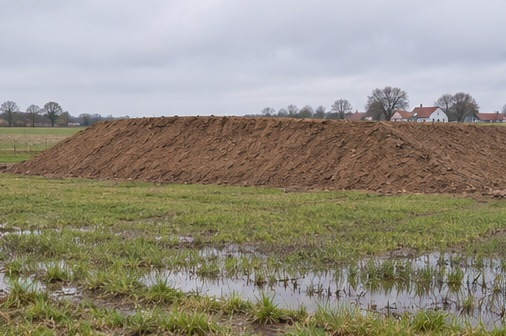

Dræn og poreovertryk
1D-konsolidering og deformation over tid
Følg poreovertryk, primær tøjning og krybetøjning efter en pludselig terrænlast. Se, hvor hurtigt lasten overtages af kornskelettet, når lerlaget drænes fra én eller to sider.
Se tidskurven fra et ødometerforsøg →
Indstillinger
Principskitse og resultater
Symboler og enheder
- dimensionsløs tidsfaktor
- konsolideringskoefficient (m²/døgn)
- tid efter belastning (døgn)
- længste drænvej (m)
- hydraulisk ledningsevne (m/døgn)
- konsolideringsmodul (omregnes fra MPa til kPa)
- vandets rumvægt (kN/m³)
- poreovertryk (kPa)
- påført terrænlast (kPa)
- afstand til nærmeste drænflade divideret med H
- summen tages over de ulige tal 1, 3, 5, …
- konsolideringsgrad, lig 1 minus det relative poreovertryk i gennemsnit
- lagtykkelse (m)
- sætning til tiden t (m i formlen, vist i mm)
- slutsætning (m i formlen, vist i mm)
- εprim,∞
- primær sluttøjning beregnet fra arbejdskurven
- εcr
- krybetøjning fra t₁₀₀
- εs
- tøjning pr. tidsdekade på krybegrenen
- Qₛ
- maksimal krybehældning pr. tidsdekade, nået ved forbelastningsspændingen i modellen
- t₁₀₀
- tid til afslutning af primær konsolidering i modellen (døgn)
- δsamlet
- summen af primær sætning og krybesætning (m i formlen, vist i mm)
- OCR
- forbelastningsspænding divideret med effektiv startspænding
- σ′f
- effektiv startspænding (kPa)
- σ′pc
- forbelastningsspænding (kPa)
- Q
- stamkurvens primære tøjning pr. spændingsdekade
Vis beregningen for hvert dellag
Tøjning over tid
Punkterne viser den valgte tid. Når tiden er mindre end t₁₀₀, falder den samlede kurve sammen med den primære. Den stiplede lodrette linje markerer krybningens start i modellen.
Ligninger
Tidsfaktor
Konsolideringskoefficient
Relativt poreovertryk
Primær slutsætning
Primær sætning til tiden t
Krybetøjning efter primær konsolidering
Samlet sætning
Undersøg selv
Skift fra ensidig til dobbeltsidig dræning med samme lagtykkelse. Hvorfor ændres tiden til 50 % konsolidering?
Se forklaringen
Drænvejen halveres. Ved samme tidsfaktor er tiden proportional med drænvejens kvadrat og bliver derfor en fjerdedel.
Forudsætninger
Ensformig og pludselig terrænlast, ét homogent lerlag og konstant konsolideringskoefficient. Primær sluttøjning beregnes med arbejdskurven fra 1D-deformationsøvelsen. Normalkonsolideret ler følger stamkurven. Forkonsolideret ler genbelastes med konstant K frem til forbelastningsspændingen og følger derefter stamkurven.
Modellen sætter t₁₀₀ ved T = 2 og skalerer den primære tøjningskurve til 100 % her. Derefter holdes den primære tøjning på slutværdien. Krybetøjningen sættes til nul frem til t₁₀₀. Derefter bruges den valgte krybehældning ved slutspænding under forbelastningsspændingen og Qₛ ved eller over den.

Læs videre i lærebogen
Geoteknik, 3. udgave
Kapitel 6 · Konsolideringens tidsforløb, §§ 6.2–6.3, s. 162–167. Kapitel 5 · Jords deformationer, §§ 5.2–5.4, s. 141–149, og § 5.6, s. 153–154.